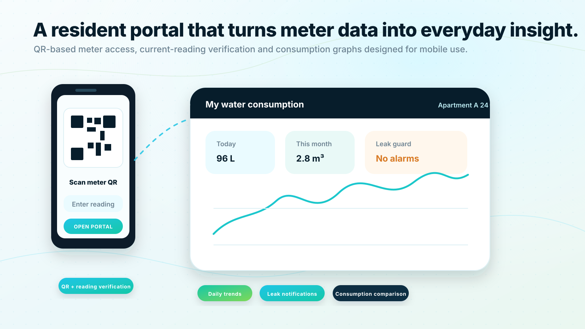

Consumption history:
Daily, weekly, monthly and yearly trends.
Resident transparency
The QualMeters resident portal gives residents a simple way to understand their own water consumption. Each meter can be opened through a QR code, and access is verified by entering the current meter reading.

Resident portal
Each meter includes a QR code. When the resident scans the code, the correct meter view opens. The user then enters the current visible reading from the meter, which is used as a possession-based verification step.
No complex setup is needed for first access. The resident scans the meter, confirms the current reading and begins viewing consumption in a clear, mobile-first interface.
Implementation note for production: QR code plus current reading should be rate-limited and can be strengthened with tenant invitations, property manager approval or account-based unit association when higher assurance is required.
Resident portal
Daily, weekly, monthly and yearly trends.
Separate and combined views when apartments have two meters.
Alerts for continuous flow, abnormal usage and sudden spikes.
Optional benchmark views against similar households when enough profile information is provided.
Practical guidance to reduce consumption and detect waste.
Resident portal
Residents can choose to add information such as household size. The system can then provide more relevant comparison data, for example comparing a two-person household with similar households rather than with the entire building average.
Privacy must be central. Benchmarking should use aggregated and anonymized peer groups so residents receive useful insight without exposing individual neighbors.
Resident portal
QualMeters can help housing companies introduce digital water visibility in a way that is simple, secure and understandable.
Discuss resident portal rolloutSales consultation
Share your building type, meter count, communication requirements and integration needs. QualMeters will help you map the right deployment model and next steps.
No obligation. We will start by understanding your existing meters, buildings and goals.
 Request a demo
Request a demo